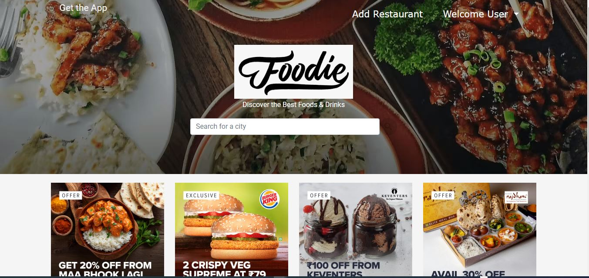
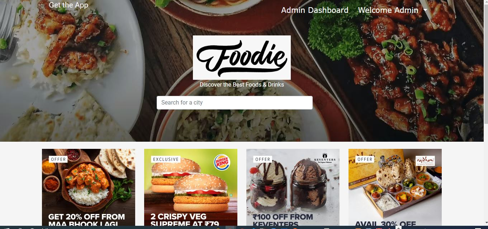
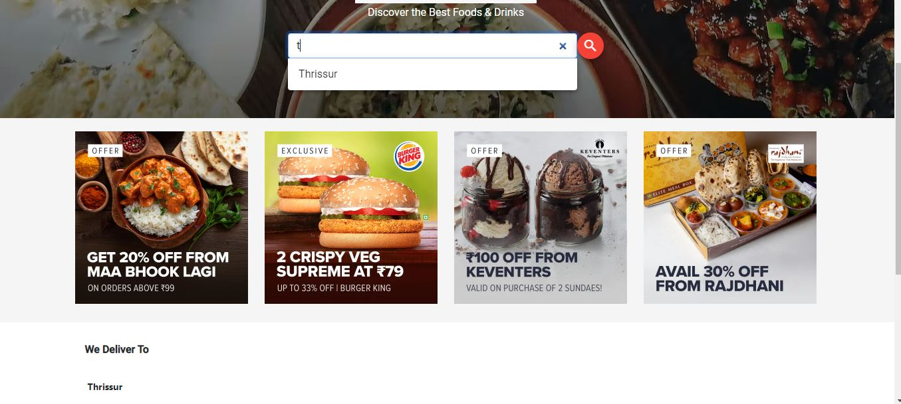
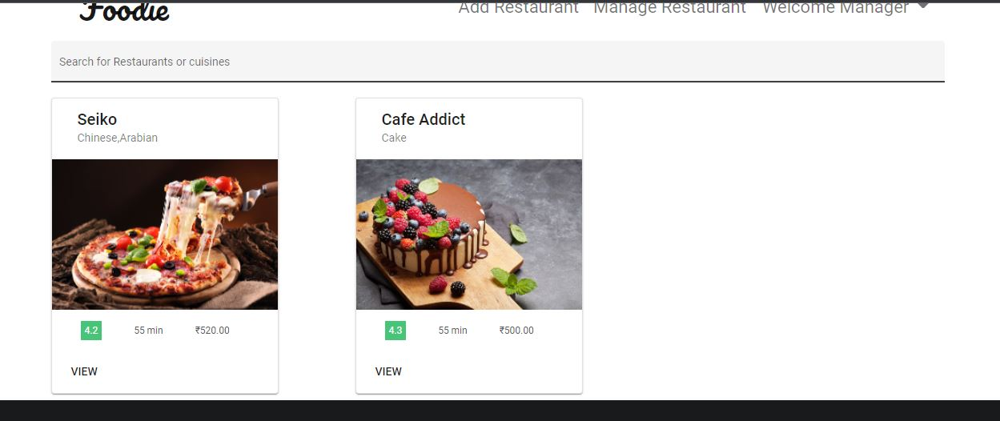
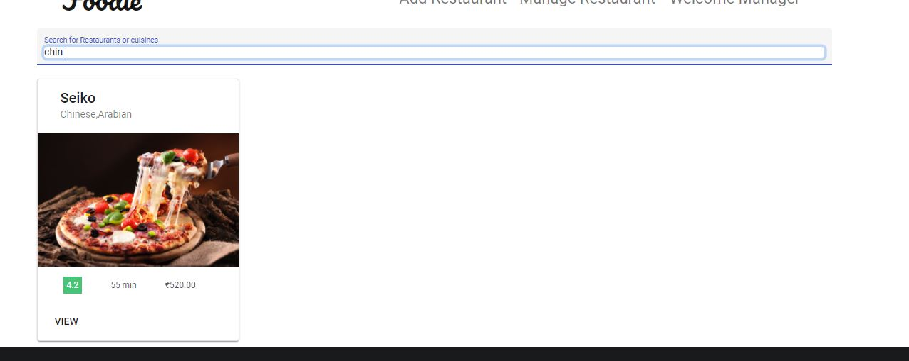
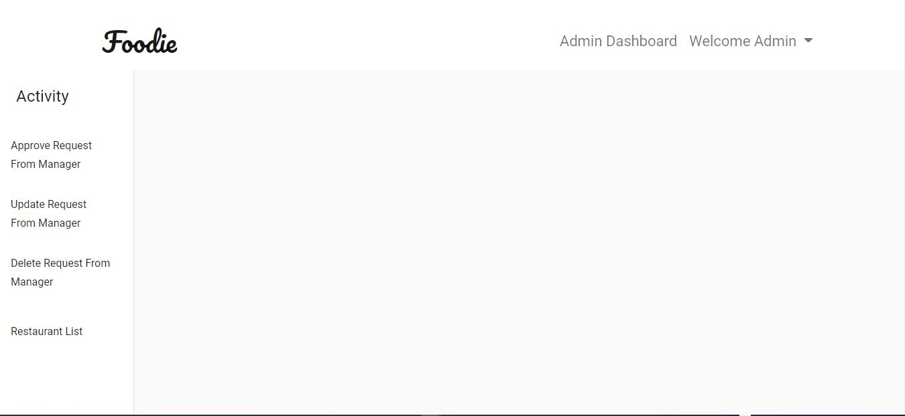
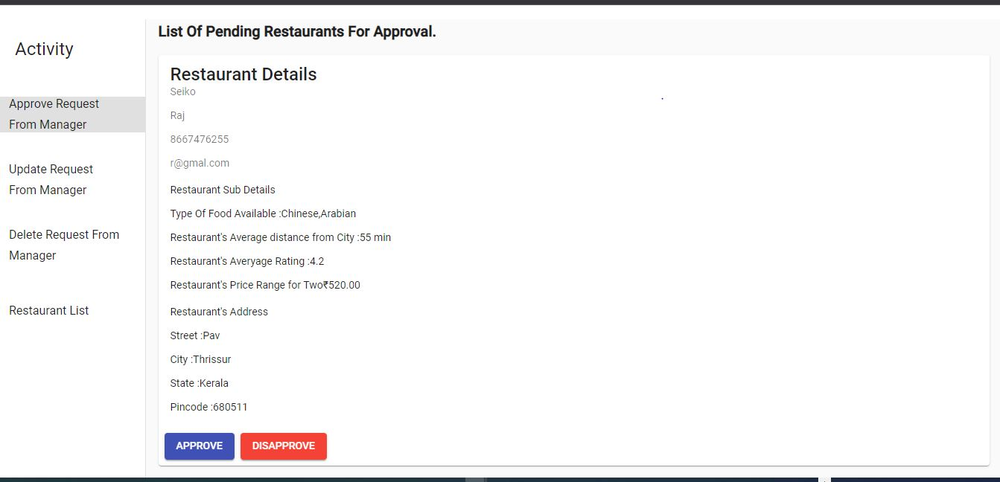
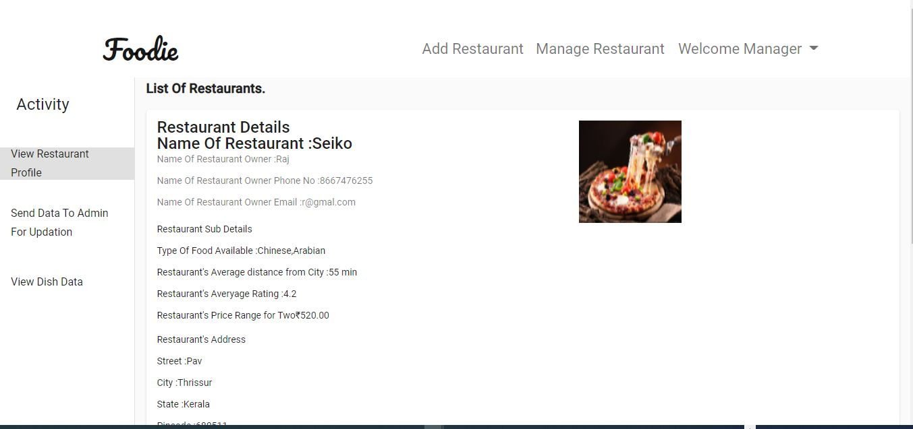

Foodie Application
This was a project I started to develop as my Final Project for the NIIT course completion.
The Project Uses Role Based Authorization Control. Various roles such as "Admin", "Restaurant Manager" and
"User" is present.
Admin can do CRUD on the data of Restaurants. Recevies Request from the Manager and able to
Approve/Disapprove the Request
accordingly.
Restaurant Manager can do CRUD on Dishes present as well send request to Admin for certains Updation in
Restaurant data.
All Users can Search for Restaurant/Cuisine based on the City where they are located
and only after Logging in they can BookMark their favourite Restaurant.
RabbitMq is used for asynchronous communication between Microservices.
I worked on this project for a duration of 3 weeks.
Technologies:
- - Java + Spring Framework
- - Angular
- - MySql
- - MongoDb
- - Rabbitmq
- - Docker
System Design

Role Based Menus
User
Manager

Admin
Search Operation
Search Based On City
List Of Restaurants
Search Based On Restaurants OR Cuisine
Management System
Admin Dashboard
 Manager Dashboard
